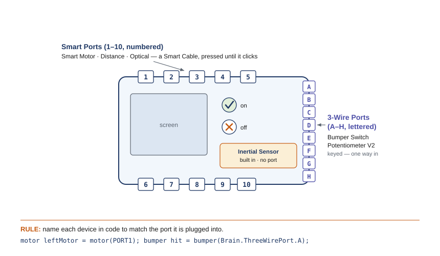

What's behind the purple lines
Open your AR-Starter project and look at the whole file — not just the region you usually type in. Most of those lines have been there since day one, quietly doing their job while you ignored them. That was the deal: write between the purple lines, leave the rest alone. You've already stretched that deal a little — back in the Survival Challenge you added a second motor above the region — but you've never really had to know what the surrounding lines mean. This chapter changes that. We'll read the starter top to bottom and name every part, until those "leave it alone" lines become lines you understand and could write yourself. It's the same idea as your Chapter 9 pseudocode — plan it, then make it run — you're just seeing the full picture now.
The tool: VS Code and the VEX extension
You already know this tool — it's where the AR-Starter lives. You write your code in Visual Studio Code (VS Code), the same editor used by a huge share of professional software developers, with the free VEX Robotics extension added on. The extension teaches VS Code how to build VEX programs and send them to your Brain. Two things are worth saying out loud now that you're reading the whole program:
- It runs on the computer in front of you, not in the cloud. Your finished program has to travel down a real USB-C cable into the Brain, so everything happens locally.
- You write in C++. It's stricter than the pseudocode you've been writing — every semicolon and curly brace matters — but the logic is the same logic you already know how to plan.
Your teacher installed the extension and set up the AR-Starter once, so you've been skipping this part. It's worth knowing how it works, though: a new EXP project is created from the VEX panel and given a name (that name is what shows up on the Brain's screen after you download it), and your code always lives in the project's src folder. If you ever start a project of your own, that's all there is to it.
The anatomy of a program
Here is a complete program — and you'll recognize most of it. It's the AR-Starter you've been using: the setup lines, your motor, main, and a few commands in the middle (this one sets a speed, then spins for five seconds and stops). The difference now is that we're going to read every line, including the ones you've been skipping:
● The whole program — nothing hidden this time
#include "vex.h" // brings in all the VEX commands using namespace vex; motor leftMotor = motor(PORT1); // name your motor + its Smart Port int main() { vexcodeInit(); // sets up the robot — don't delete this leftMotor.setVelocity(50, percent); // half speed leftMotor.spin(forward); // start spinning wait(5, seconds); // keep going for 5 seconds leftMotor.stop(); // stop }
Every program has the same skeleton, and a new project hands you most of it already written:
- #include "vex.h" and using namespace vex; — the setup lines. They bring in all the VEX commands so you can use them. These are already there when you open a new project; leave them alone.
- motor leftMotor = motor(PORT1); — your device list. This names a motor leftMotor and says it's plugged into Smart Port 1. Add one line like this for each motor or sensor you use — which is exactly what you did in the Survival Challenge when you added rightMotor on Port 6. (Your EXP motor is the fixed-speed Smart Motor from Chapter 3 — there's no gear cartridge to choose, unlike the V5 motor.)
- int main() { … } — the main program. When you run the project, the robot starts reading here and runs each line in order, top to bottom, until it reaches the closing }. Those curly braces are the same blocks you marked in your pseudocode — they hold everything that belongs to main.
- vexcodeInit(); — the first line inside main. It gets the robot ready. It's written for you; never delete it.
- Everything after that is your behavior — the commands you write. This is where your plan turns into action.
Notice the semicolon at the end of each command. In C++, a semicolon means "this instruction is finished" — like a period at the end of a sentence. Forgetting one is the most common first mistake, and the editor will underline it in red to help you.
Talking to a motor
Almost everything you do to a motor is one of four commands. Each starts with the motor's name, a dot, and then what to do:
● The four commands you'll use most
leftMotor.setVelocity(50, percent); // how fast: 0 to 100 percent leftMotor.spin(forward); // start spinning (forward or reverse) wait(2, seconds); // pause the program here (also: msec) leftMotor.stop(); // stop the motor
- Speed is a percent, 0 to 100. setVelocity(50, percent) is half speed; 100 is full. (If you've seen older robots that used 0–127, this is the modern, friendlier scale.) A new motor starts at 50% until you say otherwise.
- Direction is forward or reverse. To make a motor that's mounted backwards count "forward" the right way, you can flag it once where you name it: motor rightMotor = motor(PORT6, true); — the true reverses it.
- wait pauses the whole program for the time you give it — seconds or msec (milliseconds). While the program waits, whatever you started keeps doing its thing. That's why spin, then wait(5, seconds), then stop runs the motor for five seconds.
- stop halts the motor. Leave it out and the motor keeps spinning — the classic first bug from Chapter 9.
There's a shortcut, too: leftMotor.spinFor(forward, 5, seconds); does the start-wait-stop all in one line. Both are fine — start with the three separate steps, since they map cleanly onto your pseudocode.
Wiring the Brain: ports and power
Your code names each device and the port it's plugged into — motor leftMotor = motor(PORT1);. For that to work, the motor really has to be in port 1. So before you download, let's wire the Brain and make the code match what's plugged in.
The EXP Brain has two kinds of port, plus one sensor built in:
- 10 Smart Ports, numbered 1–10 along the top and bottom edges. Smart devices — the Smart Motor, the Distance Sensor, the Optical Sensor — plug in here with a Smart Cable. In code they're named by number: motor(PORT1), distance(PORT2).
- 8 3-Wire Ports, lettered A–H. Simpler devices — the Bumper Switch, the Potentiometer V2 — plug in here. In code they're named by letter: bumper(Brain.ThreeWirePort.A).
- The Inertial Sensor is built into the Brain — there's no port to plug it into, and it's always available (you'll meet it in Chapter 13).

Connecting is mechanical and quick:
- Smart devices: push the Smart Cable firmly into the socket on both the device and the Brain until you hear it click. To remove it, press the small release tab and pull gently — never yank the wire.
- 3-Wire devices: the connector is keyed, so it only goes in one way. Line it up and push.
Match the code to the ports. The single most common reason a brand-new program "does nothing" is that the code names one port while the device is plugged into another. Pick a port, plug the device in, and name that exact port in your device list — every time.
Power. A charged battery slides into the back of the Brain. Press the Check (✓) button to turn the Brain on and the X button to turn it off. (The EXP battery and its charger are their own — they don't swap with the V5 team's kit.)
Getting it onto the robot
Writing code doesn't move the robot — you have to download it. Here's the loop you'll repeat dozens of times:
- Plug in. Connect the EXP Brain to the computer with a USB-C cable and turn the Brain on.
- Download. Click the Download button. The extension first builds your code (checks that the C++ is valid — if not, it tells you where), then sends it to the Brain. Your project name appears on the Brain's screen.
- Run. Press the Run button to start it while the robot sits still on the bench. For a program that drives, download it, unplug the cable, and start it from the Brain's screen so the robot can move freely.
If the build fails, read the first error and check the obvious things: a missing semicolon, a missing }, or a motor name spelled differently than where you declared it.
🔌 It downloaded, but nothing moves — check in this order
- Cable seated? Re-push both ends until they click. A half-seated Smart Cable is the most common cause.
- Right port? Compare your device list to what's actually plugged in — does the code say PORT1 while the motor sits in port 2? The Brain's Devices screen and the VEX DEVICE INFO panel in VS Code both list what the Brain currently sees; match them to your code.
- Powered and charged? Brain on (Check button), battery not flat.
- Named in code? Every device you use needs its line in the device list, spelled the same way you use it.
- Motor straining? If it whines but doesn't turn, the load is too heavy — that's a build problem, not a code one (Chapter 3's stall).
🎯 Build a little, test a lot
The orange loop in the diagram is the most important habit in this chapter. Don't type the whole program and hope. Write one command, download, and watch it run. Then add the next. When a program built one tested step at a time misbehaves, you already know the culprit — it's the line you just added. A wall of twenty untested lines, by contrast, can hide its bug anywhere.
🏆 Also on the V5 competition team?
The full command-by-command map is in Appendix B: EXP → V5 Team Bridge.
You're already using the exact tool the competition team uses: VS Code with the VEX extension, writing C++. The commands are the same too — spin, setVelocity, wait, stop. Two differences: a V5 program names its motors with a gear cartridge (like ratio18_1) because V5 motors have swappable gears, while your EXP motor is fixed and needs no cartridge; and a V5 Brain has 21 Smart Ports to your EXP Brain's 10. Skills you build here transfer straight across — see the V5 C++ API.
📚 Learn more — VEX Library & C++ API
- Creating VS Code Projects for EXP — the New Project wizard, step by step.
- Downloading and Running an EXP Project in VS Code — the Build, Download, and Run buttons and what each does.
- Motor and Motor Group — VEX EXP C++ API — the full list of motor commands, including setVelocity, spin, spinFor, and stop.
- Installing the VEX Extension in VS Code — one-time setup, if your computer doesn't have it yet.
⚠️ Safety
- Before you run a program, make sure the robot can't drive off the bench — prop the wheels off the table, or be ready to grab it. A first program can lurch unexpectedly.
- Keep fingers, hair, and loose clothing clear of the spinning motor shaft and any gear or wheel on it.
- Run a driving program only after you've unplugged the USB-C cable — never let the robot drive while tethered to the computer.
- Seat the USB-C cable gently, and power the Brain down with the X button when you're done.
What you'll need
- A computer with VS Code and the VEX extension installed
- A VEX EXP Brain and a charged EXP battery
- At least one EXP Smart Motor (or your robot from earlier chapters)
- A USB-C cable to connect the Brain to the computer
- Your pseudocode from Chapter 9, and your engineering notebook
Do it
- Create a project. In VS Code, make a new EXP project and name it (your name shows up on the Brain). Open the file in src.
- Name your motor. Add the device line for your motor — its name and the Smart Port it's plugged into — near the top, like motor leftMotor = motor(PORT1);.
- Type the first program. Inside main, after vexcodeInit();, write the four lines that set the speed, spin, wait five seconds, and stop.
- Download and run. Plug in the Brain over USB-C, click Download, then Run. Watch the motor spin for five seconds and stop. If the build complains, fix the first error and try again.
- Add a second motor (build a little, test a lot). Name a second motor on another port, mounted on the other side so set it reversed. Make both motors spin, run for a few seconds, and stop. Download and test — then try running one forward and one reverse.
- Make your plan real. Take one behavior from your Chapter 9 pseudocode and translate it into C++, one line at a time, downloading and testing as you go.
Check your understanding
- Name the parts of a VEX C++ program: what do the setup lines, the device list, int main(), and vexcodeInit() each do?
- What does a semicolon mean at the end of a C++ command, and what usually happens if you forget one?
- Write the commands to spin a motor named armMotor at full speed for 3 seconds, then stop.
- What does the Download button do — and why isn't writing code alone enough to move the robot?
- Your code says motor(PORT1) but the motor is plugged into port 3, and the program "does nothing" when you run it. What's wrong, and what two things could you check to see which port the Brain actually detects the motor in?
- You wrote spin and wait(3, seconds) but left out stop. What will the motor do, and why?
- Why is it better to write and test one command at a time than to type the whole program first? Connect your answer to the test loop in the diagram.
Key terms
Sources (PLTW Gateway Automation & Robotics, Activity 3.3 "Using ROBOTC" / VEX testbed programming; VEX Library, kb.vex.com; VEXcode EXP C++ API, api.vex.com): the testbed programming progression (run a motor at a set speed for a set time, then add a second motor and reverse, then add sensors) is from the PLTW Gateway curriculum — modernized here from the legacy Cortex/ROBOTC tool to VEX C++ in VS Code on the EXP Brain. The toolchain workflow (installing the VEX extension, creating an EXP project, and the Build / Download / Run steps over USB-C) is verified against the VEX Library (Creating VS Code Projects for EXP; Downloading and Running an EXP Project in VS Code; Installing the VEX Extension in VS Code). The C++ program structure (#include "vex.h", using namespace vex;, int main() with vexcodeInit()) and the motor commands (setVelocity in percent, spin, spinFor, wait, stop, and the motor(PORT1) declaration whose gearing defaults automatically) are verified against the VEXcode EXP C++ API. The fixed-speed EXP Smart Motor carries over from Chapter 3. The Brain's port layout (10 numbered Smart Ports, 8 lettered 3-Wire ports A–H, and a built-in Inertial Sensor), how Smart Cables seat and release, and powering on/off with the Check and X buttons are verified against the VEX Library (Connecting Devices to Smart Ports on the EXP Brain; Powering the EXP Brain On and Off) and the EXP Brain product documentation; the "won't respond" checks draw on Troubleshooting VEX EXP Sensors and the VS Code DEVICE INFO panel.